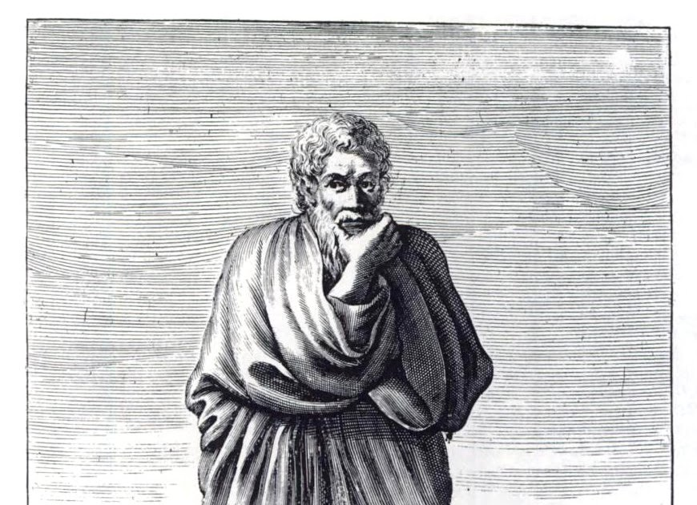

"LA VERDADERA SABIDURÍA ESTA EN RECONOCER LA IGNORANCIA"
El mundo de Papalarva
Escépticos
Pirronismo
Escepticismo antiguo o pirronismo
El escepticismo como tendencia filosófica que origina una forma de pensar que llega hasta nuestro días fue fundado por Pirrón de Elide y aunque muchos manuales hablen de predecesores, los propios escépticos se consideraban seguidores del filósofo Pirrón, de ahí el nombre de pirronismo con que se conocía este movimiento en sus orígenes. Es probable que algunas opiniones de filósofos anteriores como Democrito o Anaxarco o un cierto modo de pensar de los antiguos sofistas o la teoría del conocimiento de los cirenaicos, influyesen de alguna manera en Pirrón, pero el escepticismo tal y como lo conocemos tuvo su origen en las propias elaboraciones del filósofo.
Pirrón de Elide
Pirrón (-365/-360 a -275/-270 aprox.) nació en Elide, en el Peloponeso, es considerado el fundador del movimiento escéptico y es uno de esos personajes de los que se puede decir que su forma de vivir es inseparable de su forma de pensar, siendo la indiferencia su cualidad más característica. Pirrón no escribió nada y prefirió vivir en la pobreza, según Diógenes Laercio también fue pintor y cuenta que seguía hablando a los que venían a sus charlas, aunque ya se hubieran ido todos, dando a entender con esto su completa indiferencia y su impasibilidad. Sus enseñanzas fueron siempre orales, conforme a la costumbre de algunos filósofos de esta época, afortunadamente para nosotros, su discípulo Timón de Fliunte, recogió por escrito sus principales teorías. Se inició en la escuela megárica y posiblemente fuera discípulo de Euclides de Megara o de su discípulo Brisón, conoció a algunos seguidores de Demócrito, simpatizó con el cinismo y participo en la expedición de Alejandro Magno a la India. En esta expedición tomo parte también Anaxarco de Abdera de quien aprendió dialéctica y según nos dice Diógenes Laercio, ambos frecuentaron la compañía de los gimnosofistas y de los magos hindúes. Según su discípulo Timón, Pirrón declaraba que las cosas eran igualmente indiscernibles, inconmensurables e indeterminables, por esta razón no debemos fiarnos de los sentidos ni hacer juicios. Con esta actitud se consigue no hacer afirmaciones que pueden dar lugar a la preocupación y es, por tanto, una forma de librarse de la inquietud. Una cuestión más polémica es que para Pirrón la suspensión del juicio no afecta solo a las cuestiones materiales, sino también a las concepciones morales, pero es aquí sobre todo donde se consigue la liberación de la inquietud. Con esta disposición de ánimo podremos llegar a no pronunciarnos sobre nada y conseguir la ataraxía o serenidad de espíritu. Dado que Pirrón no escribió nada, la mayor parte de lo que conocemos de él procede de su discípulo Timón de Fliunte, de los testimonios de Diógenes Laercio y de algunos comentarios de Cicerón, de Sexto Empírico y de Aristocles de Mesina, en sus libros. Además de Timón de Fliunte, también fueron discípulos suyos Hecateo de Abdera, Filón de Atenas y Nausífanes de Teo (quien a su vez fue maestro de Epicuro). La principal inquietud que motiva el pensamiento de Pirrón es de carácter moral y se centra en la manera de conseguir la felicidad, por ello intenta establecer los criterios que deben dirigir el pensamiento para conseguirlo. Pero la realidad está en contra de lo que percibimos por los sentidos y por tanto existe una imposibilidad de conocer la verdadera naturaleza de las cosas, ya que nuestros conocimientos proceden de la sensación, que no aporta un conocimiento verdadero, ya que al ser cambiante, tan sólo nos proporciona meras apariencias. De esto hay que concluir que la creencia de que podemos conocer las cosas tal como son realmente no tiene fundamento, ni se puede creer que ninguna opinión sea realmente verdadera. Al no tener ninguna seguridad en sus juicios, el sabio no se pronuncia y practica una epojé o suspensión del juicio, por esto es necesario la imperturbabilidad del sabio o ataraxia, lo que consideraba el único criterio para conseguir la felicidad. En las cuestiones sociales, Pirrón opinaba que era mejor seguir las normas de conducta establecidas, no porque sean mejores o peores que otras, cosa que no podemos saber, sino por una simple cuestión práctica, pero en su conducta, el sabio no se deja impresionar por las cosas externas, ya que la felicidad sólo se consigue por la ataraxia. Como en el caso de los cínicos, la filosofía de Pirrón es sobre todo un ejercicio filosófico de transformación del modo de vivir y de pensar con el fin de conseguir un estado de ataraxia o serenidad de espíritu.
Timón de Fliunte.

Timón (-325/-320 a -235 aprox). Nació en Fliunte (Peloponeso). Fue discípulo de Pirrón y puso las enseñanzas de su maestro por escrito, principalmente en forma de poemas satíricos. En su juventud se dedicó al teatro y a la danza, también pasó por la escuela megárica y simpatizó con el cinismo. Según Diógenes Laercio era "elocuentísimo", y escribió mucho, poemas, tragedias, sátiras y varias "obscenidades", tanto en verso como en prosa. Se estableció hacia el año -300 en Megara, frecuentando la compañía de Estilpón, después viajó a Elide donde conoció a Pirrón y se convirtió en su discípulo más entusiasta. Se dedicó a la enseñanza de la retórica y tuvo varios discípulos. Timón atacó sarcásticamente en sus escritos a los filósofos de otras escuelas, en defensa del pirronismo. De nuevo, según Diógenes Laercio, Timón no tuvo sucesor y la corriente escéptica quedo abandonada hasta que la restauró Ptolomeo de Cirene en el año -100 aprox.